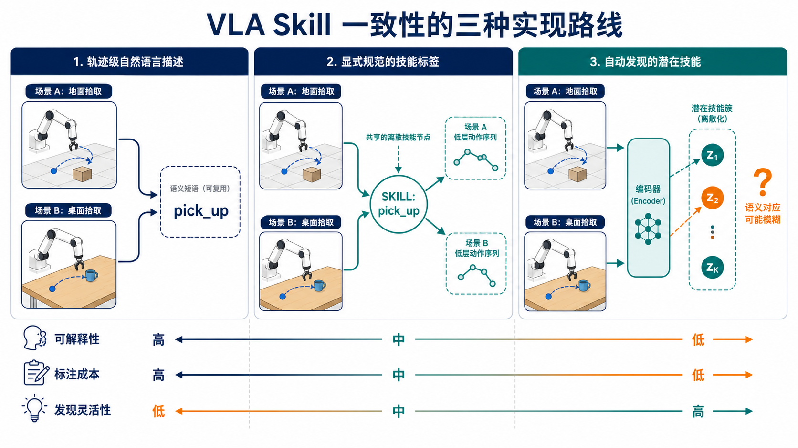

应该共享
地面拾取与桌面拾取具有相同的高层意图、成功判据和可组合角色，因此应共享 pick_up 技能身份。
Research note · 2026-08-09
“从地面捡”和“从桌面捡”应不应该共享同一个 pick_up？本文比较整轨迹语言、显式 Skill 标签与自动发现 Latent Skill 三条 VLA 训练路线，并给出可验证的实验设计。
地面拾取与桌面拾取具有相同的高层意图、成功判据和可组合角色，因此应共享 pick_up 技能身份。
两者的高度、接近方向、避障路径与关节构型不同，低层动作必须根据具体上下文生成。
pick_up：跨场景共享的操作语义
依靠语言空间表达任务等价，最接近主流 VLA 接口。
canonical_skill: pick_up instruction: pick up the mug arguments: source: table
适合：短时域、开放词汇、多任务 VLA
用共享 ID 直接规定跨场景等价，是当前研究问题最清晰的主基线。
skill: PICK_UP object: mug support: table postcondition: object_in_gripper: true
适合：论文主实验、层级策略、安全诊断
从轨迹或无动作视频中学习离散/连续 code，发现灵活但语义不受控。
z = Encoder(o_t, o_t+Δ) policy: a_t:t+H ~ π(o_t, z) audit_only: skill_label: PICK_UP
适合：无标签预训练、子技能发现、探索基线
Latent 的核心混淆：模型可能得到“所有地面场景 = z₁、所有桌面场景 = z₂”，而不是“所有拾取 = z₁、所有放置 = z₂”。因此必须用仅用于评估的人工标签审计 latent 表征。
每条完整示范由一句指令条件化；模型不接收独立的 skill ID，而是从语言嵌入中判断当前要执行什么行为。
训练样本是三元组 (observation, instruction, action)。同一个 pick_up 不以类别 ID 出现，而是隐含在 “pick up the block from the floor” 等句子中。
最简单是一条轨迹一句话。更可靠的做法是同时保存：
语言经过预训练文本编码器或 VLM 得到 token，视觉和本体状态提供当前上下文，动作头输出单步动作或 action chunk。RT-1、Octo、OpenVLA 都属于这种任务条件范式，但动作头形式不同。
仅用行为克隆不会强制两条拾取轨迹拥有相同中间表示。可增加跨场景对比约束：
正样本是同 skill 不同 context；负样本是同 context 不同 skill。
用户输入自然语言，模型在当前图像中绑定目标物体与空间关系，再直接生成动作。它不显式输出“现在调用 PICK_UP”，因此执行失败时较难判断是语言理解错、视觉 grounding 错，还是控制错。
适合开放词汇与短时任务；对包含 approach → grasp → lift → retract 的长轨迹，单句标签不能提供阶段边界，通常需要 subtask 文本、进度变量或更细的时间标注。
人为定义有限技能词表，把地面拾取和桌面拾取都标为 PICK_UP，同时把几何差异留给上下文参数和低层控制器。
除低层动作外，数据还提供每个轨迹片段的 skill 类别与边界。模型可联合预测技能和动作：
建议使用“动词技能 + 参数”，不要把每种场景都变成新类别：
skill=PICK_UPobject=mugsupport=tablegrasp_mode=side粗粒度可把整段行为标成 PICK_UP；中粒度可拆成 APPROACH → GRASP → LIFT。研究跨场景复用时，应先使用稳定、少量、可组合的粗粒度词表，再在 skill 内学习运动细节。
可以是两个头共享主干：高层头预测 skill，低层头以 skill embedding 为条件生成动作；也可以用 skill 路由 Mixture-of-Experts。共享低层头更能检验是否真的形成跨场景复用。
模型先根据任务与观测选出 PICK_UP，再由上下文条件控制器决定从地面还是桌面接近。显式中间变量允许记录 skill 选择置信度、切换时刻与失败阶段。
技能结束最好由后置条件或 learned termination head 判定，而不是固定时长。长任务还需约束合法转移，例如 GRASP → LIFT，避免标签正确但衔接状态不可执行。
训练阶段不提供 skill 标签，编码器从状态变化或轨迹片段中学习离散 code zₖ，策略再以该 code 为条件复现行为。
离散方案常用 VQ-VAE，把短时状态变化压缩为有限 code；连续方案使用 VAE 或轨迹编码器。LAPO 从无动作视频恢复 latent action，LAPA 再用少量带动作数据学习 latent-to-robot-action 映射。
编码器应提取能解释未来变化、又不过度记忆像素的因素：
若使用机器人动作，还可加入动作重建或行为克隆目标。
码本太小会把 pick/place 等行为混在一起；太大则按物体、背景或轨迹细节碎片化。时间窗过短更像瞬时速度，过长又会混合多个技能。二者都必须作为消融变量。
纯 latent 不保证 code 可被语言调用。可在发现之后为 code 自动生成描述，或加入语言—latent 对比损失。加入语言监督后得到的是混合方案，需要与纯无监督版本分开报告。
保留人工标签只用于评估：计算 NMI、ARI、purity 与 code utilization，并分别训练 skill probe 和 context probe。若 context probe 更强，说明 code 主要编码场景。
| 维度 | 整轨迹语言 | 显式 Skill 标签 | 自动 Latent Skill |
|---|---|---|---|
| 一致性来源 | 语言语义相似性 | 人工定义的共享 ID | 数据驱动聚类 |
| 跨场景共享确定性 | 中等 | 最高 | 不确定 |
| 开放词汇泛化 | 高 | 低—中 | 低，除非语言对齐 |
| 可解释性 | 高 | 最高 | 低 |
| 标注成本 | 中 | 高，分段时更高 | 低 |
| 技能边界 | 模糊 | 明确 | 自动但可能漂移 |
| 发现未知子技能 | 弱 | 无 | 最强 |
| 场景捷径风险 | 中 | 较低 | 很高 |
| 在本研究中的角色 | 2 语义基线 | 1 主方案/上界 | 3 探索基线 |
统一视觉、状态、动作空间、模型容量、训练步数和执行控制器，只替换 skill 表示与相应监督。
关键负对照：同一场景中的 pick_up 与 place，以及不同场景中的同一 pick_up。数据必须平衡物体、背景、机器人、相机与轨迹长度，防止“地面总是方块、桌面总是杯子”这类伪相关。
例如训练桌面拾取，测试未见过的地面拾取。
在总体成功率相近时，差距越小越好。
避免只依赖 t-SNE；应报告成对相似度与线性 probe。
额外比较 skill probe 和 context probe；后者更强意味着学到了场景捷径。
让每种表示只承担它最擅长的职责：语言负责开放任务，显式 ID 稳定技能身份，latent 表达同一技能内部的运动多模态性。
PICK_UP证据边界：上述工作分别证明语言条件、多技能监督或 latent action 学习的可行性；它们并未在完全相同的数据、模型与控制栈上直接比较本文提出的三种一致性方案，因此最终结论需要通过第 5 节的受控实验验证。